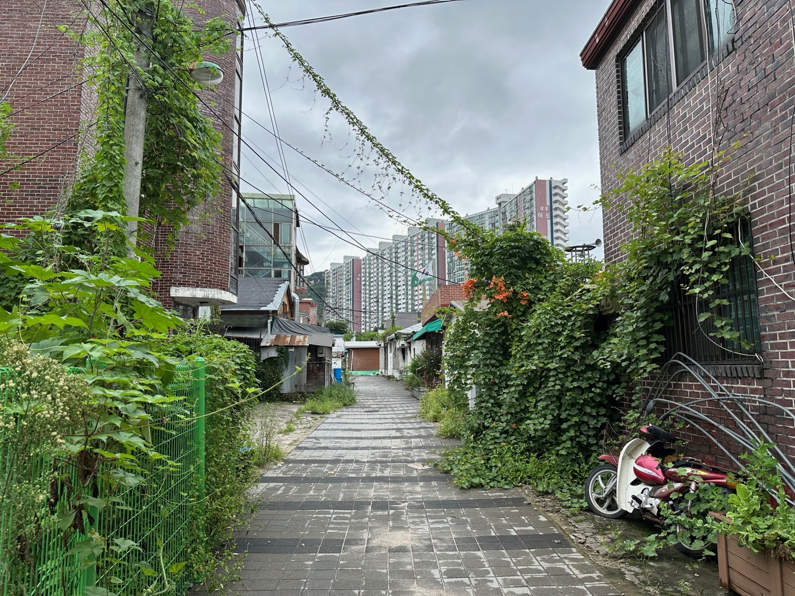

Project / Consultation
의정부 외미마을 지역 재생 및 문화예술 활성화 계획 자문
Consultation for Community Regeneration and Cultural Arts Revitalization in Oemi Village, Uijeongbu

외미마을의 역사와 생활상을 보존·기록하고, 이를 문화예술 자원으로 전환하는 방향을 제안한 지역 재생 및 활성화 자문 프로젝트다.
This consultation project proposed ways to preserve and document the history and everyday life of Oemi Village, and to transform them into cultural and artistic resources.
프로젝트 개요
본 프로젝트는 경기도 의정부시 호원동에 위치한 외미마을을 대상으로 한 지역 재생 및 문화예술 활성화 사업 제안을 위한 준비 단계에서 자문을 의뢰받았다.
외미마을은 한국전쟁 이후 자연 형성된 부락으로, 면적 약 20,298㎡, 220세대 규모이며 1호선·의정부 경전철 회룡역 인근에 위치해 있다. 2015년 재개발사업구역으로 지정되었으나 2019년 취소된 이후, 2023년 기준으로 55가구 92명만이 거주하며 공폐가가 16채 이상 방치되는 등 안전·미관 문제가 심각한 상황이었다.
진행 단계에서 철거와 재개발이 아닌, 마을의 역사와 생활상을 보존·기록하고 이를 문화예술 자원으로 전환할 것을 제안했다. 구체적으로는 지역 아카이브 구축, 주민 참여형 콘텐츠 개발, 마을 역사 전시 개최, 예술가 협업 프로그램 운영 등을 추진하는 것이다.
This project was commissioned for consultation during the preparatory stage of a proposal for community regeneration and cultural arts revitalization in Oemi Village, located in Howon-dong, Uijeongbu, Gyeonggi Province.
Oemi Village is a naturally formed settlement established after the Korean War, covering an area of approximately 20,298 square meters with 220 households, and situated near Hoeryong Station on Seoul Metro Line 1 and the Uijeongbu Light Rail Transit. After being designated as a redevelopment zone in 2015 and subsequently cancelled in 2019, the village faced serious safety and aesthetic concerns as of 2023, with only 55 households and 92 residents remaining and more than 16 vacant and abandoned properties left unattended.
Rather than pursuing demolition or redevelopment, the consultation proposed preserving and documenting the village's history and way of life, and transforming these into cultural and artistic resources. Specific initiatives put forward included establishing a local archive, developing resident-participatory content, hosting exhibitions on village history, and running collaborative programs with local artists.
State. 제안 Suggestion
Role. 자문 Consultation
Client. 분위기메이커 Atmosphere Maker